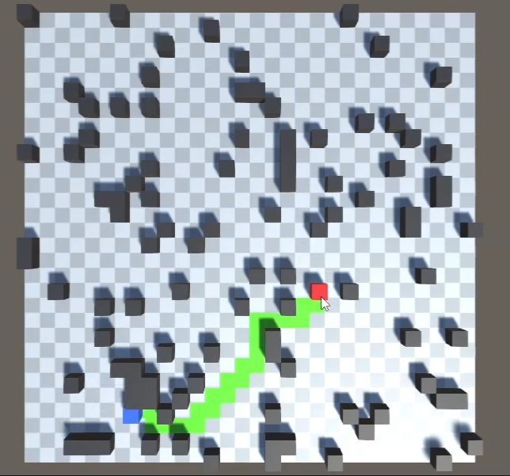
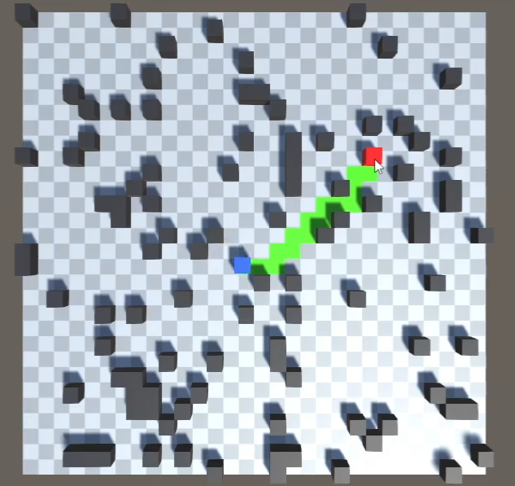

Pathfinding Simulation
A simple pathfinding system in Unity using A* algorithm with Manhattan distance for movement and Euclidean distance as a heuristic.



All obstacles and goals are generated randomly. Paths will be calculated dynamically as the goal is dragged around by the player.
Stats
Project Size
Time Commitment
Complexity
Results
About
Try it out Yourself
Can be downloaded from GitHub
Programming Languages: C#
Frameworks & Technologies: Unity